Calibration only. One Blender scene and one camera; compare the 2.5D compositor's
element crops against these. Committed by tools/render/scripts/table-reference.mjs
from tools/render/bake_table_reference.py; camera weak
(perspective, 45° elevation, eye
[0.00, -86.08, 86.43]).
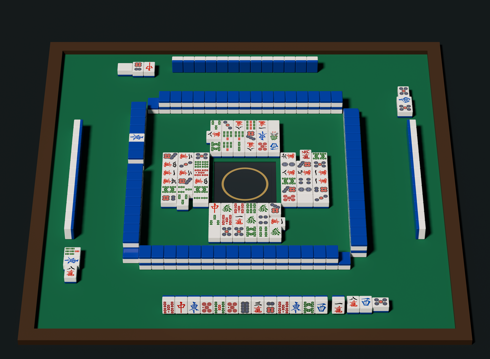
| pond tile size (px @1x, 4 seats) | 106.3127 / 94.9038 / 100.5693 / 94.4755 |
|---|---|
| near/far scale spread | 1.125293 |
| front/back run length ratio | 1.084584 |
| left/right run length ratio | 1.084584 |
| run angle error (deg) | 0 / 0 / 0 / 0 |
| bottom/top hand size ratio | 1.216764 |
| front outer lateral reveal (deg) | 4.6743 |
| minimum frame margin (px @1x) | 261.527 |
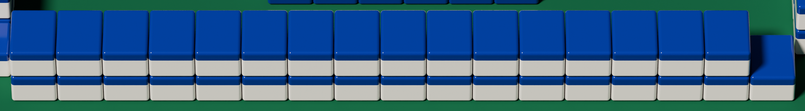
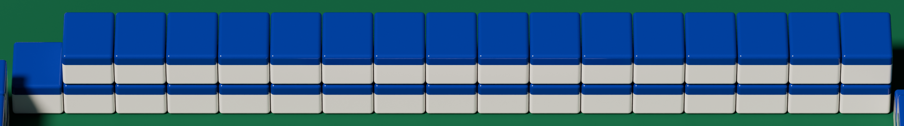
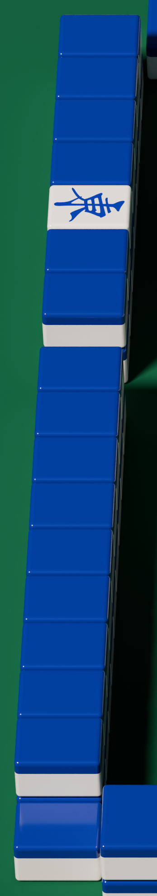
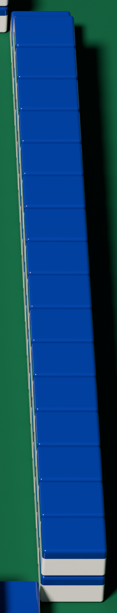
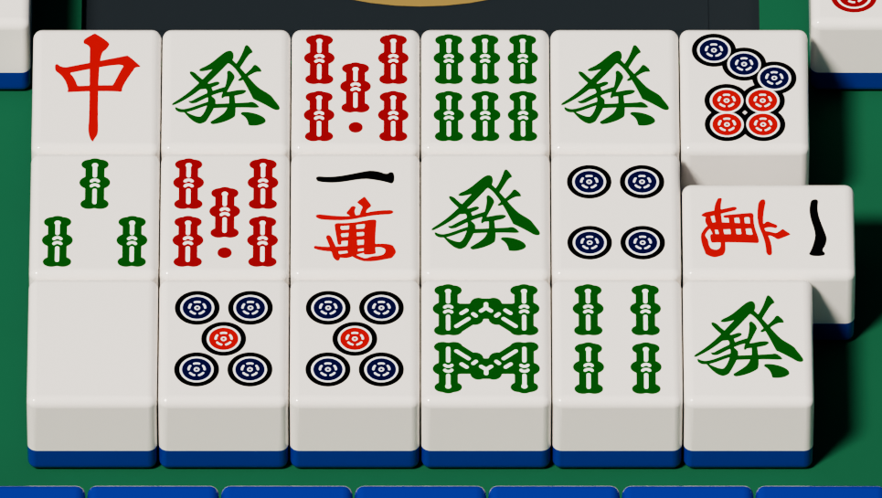
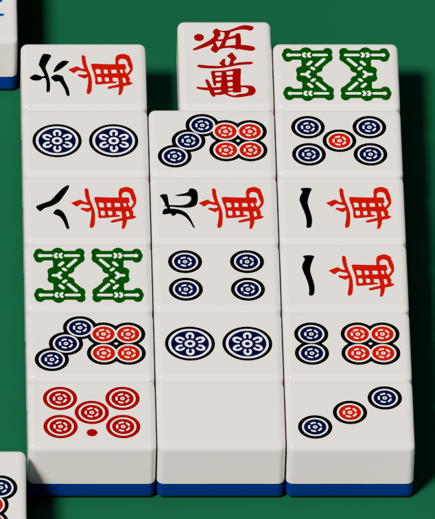
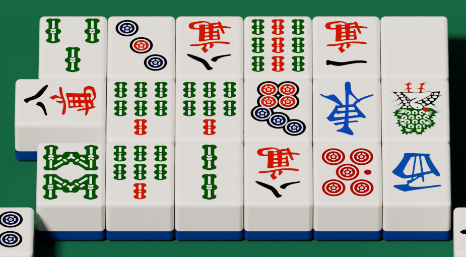
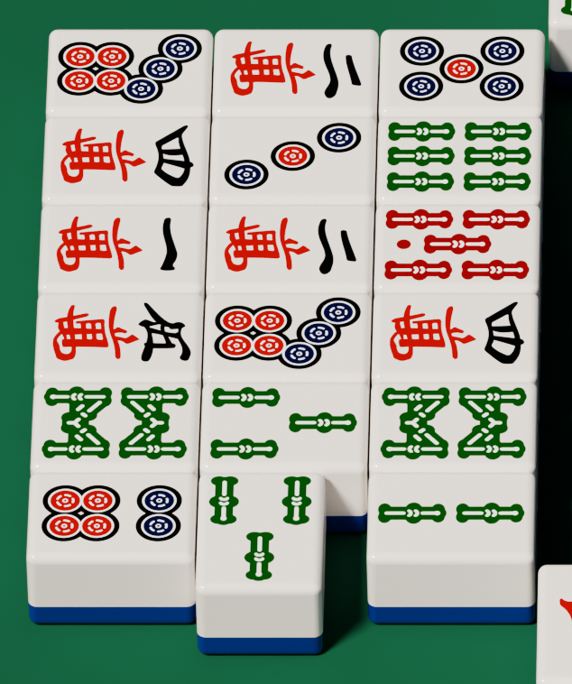
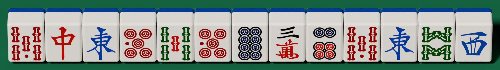
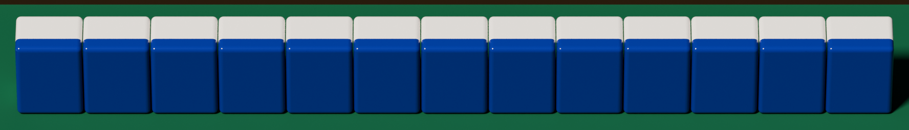
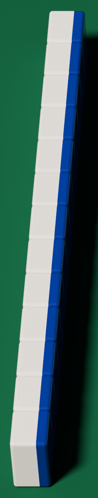
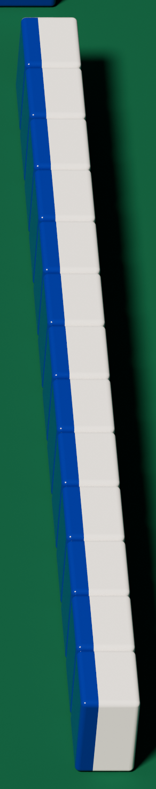
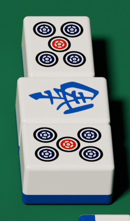
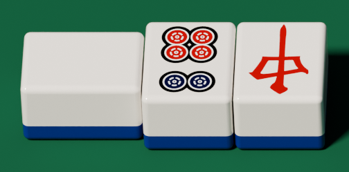
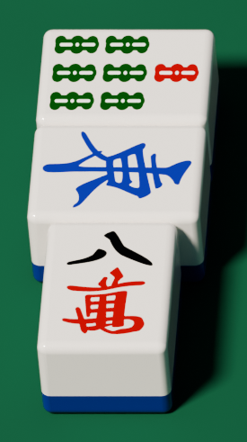
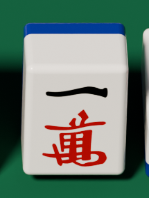